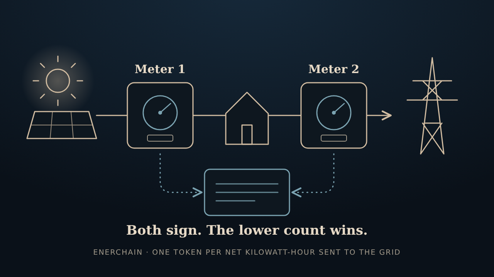

The short version
Enerchain is a proposal for an electricity currency. The pitch: when a site sends more power to the grid than it takes, hardware on the wire counts it and signs for it, one token per kilowatt-hour. It takes two sealed meters to do that, one where the power is made and one where it leaves, and a public ledger only credits what both of them back up. After that, the tokens move around like any other ledger asset. The code, docs and board files live in enerchain on GitHub.
The idea is that more and more of the economy runs on electricity, and generation is spreading out to rooftops. So why not denominate money in the thing everything runs on?
Fair warning up front: it's simulation and paperwork so far. No meter, board, or chip has been built.
How a kilowatt-hour becomes a token
Say a home array sends 10 kWh more to the grid than the house pulls from it. Here's what the design does with that.

- Two meters watch the wire. One sits at the array's terminals and counts what the panels made. The other sits at the grid connection and counts what went out and what came in.
- A chip does the adding, not a program. Each meter ticks once per watt-hour, and a small dedicated chip keeps the running totals in fixed logic. There's no port for anything outside the seal to write a number in, and the totals are meant to survive a power cut.
- Every net kilowatt-hour, a token. Each time exports climb another 1,000 watt-hours past their previous high, net of imports, the chip mints one token and builds a short record of its running totals.
- A second chip signs it. A separate secure chip keeps the key inside and knows two commands: sign the record the counting chip hands over, or erase the key. The radio only forwards what's already signed.
- The ledger takes the lower count. It checks each meter's signature against its certified key, makes sure the totals only went up, and credits the smaller of the two token counts. Here that's 10 tokens.
The records are running totals, so losing one costs nothing. The next one carries everything forward.
What's a little different about it
People have poked at energy tokens before, so here's what's unusual about this take.
- Hardware does the counting, not software. An inverter, a radio, or a server can report whatever number it likes. So in the design, the adding-up happens in a purpose-built chip with no way in from outside, and a separate off-the-shelf secure chip does the signing. That one runs a tiny firmware image whose hash is published, so a swapped image doesn't verify.
- Two meters, the lower count wins. One sealed meter sits at the generator and vouches that the power was produced. Another sits at the grid connection and vouches that it left the site. Each has its own key. The ledger wants signatures from both before it credits anything, then goes with the lower count. So one meter can't mint alone, and a meter that's been fooled or opened up can't mint past what its partner saw.
- Net export only. A battery that buys from the grid at night and sells back at noon doesn't raise the net-export mark, so it mints nothing. There's a test for it.
- Every kilowatt-hour gets its own signature, using ML-DSA, a post-quantum scheme. The signer can't deny it later. Quantum-resistant under the standard, not quantum-proof.
- One unit, any size of region. The same measurement language runs from a single feeder up to, someday, a planetary region trading with another.
- It shows its homework. The repo includes a review that found the earlier board design couldn't have worked, a threat model, and a list of every assumption still to verify. It also says plainly that nothing has been built.
A token doesn't prove the energy was renewable, that it displaced anything, or that it wasn't also sold to a utility somewhere else. That's a market-design question, and it's still open.
What's in the repo today
Four pieces. All of them are things you can read or run, and none of them is a physical object yet.
- A Python devnet. A ledger, a wallet and a small test network, with the two-meter rule, meter certification, transfers and replay refusal. One command runs a demo. Blocks are ordered by a fixed set of validators for now, which is fine for a test network and not for a public one.
- Chip logic that simulates. The counting chip's Verilog runs end to end in simulation: setup, minting on net export, power cuts, the signer saying no, and a key wipe. Its output matches the Python model byte for byte.
- Signer firmware. The image for the secure chip. It makes its key once, remembers a wipe for good, and won't sign a record that goes backwards. It's been tested on a regular computer, not on the chip.
- A board design. Revision B board files, generated by a script, after a review found the earlier board couldn't have worked.
Around those sit the whitepaper, a threat model, and the open-items list. Software and docs are Apache-2.0. The hardware files are CERN-OHL-S-2.0, which means anyone who builds on them has to share their changes the same way.
Where enerchain is headed
Here's the loose roadmap. It's phases, not a schedule, and nothing has dates. The order can shuffle if a better idea turns up at 3 a.m.
- Today · v0.0.1 The paper-and-simulation prototype A Python ledger, wallet and devnet, chip RTL that simulates end to end, signer firmware tested on a host, and revision B board files. The part that already works, on a screen.
- Phase 2 Finish the simulation Regional prices for one unit, gate-level simulation on a real foundry library, and a multi-node network with a proper BFT validator protocol.
- Phase 3 A bench prototype Settle the datasheet questions, build one sealed meter pair, and feed its output to the devnet. One board alone must not mint. A battery-backed tamper domain comes with revision C.
- Phase 4 Grid trial Residential injection onto a cooperating feeder, and transfer of the resulting coins on a test ledger.
- Phase 5 Wider regions More than one terrestrial ledger, delay-tolerant transfer between them, then planetary and system books. Same unit, bigger neighborhood.
The rough idea: get the simulation airtight, then build one real meter pair on a bench, then see whether it holds up on an actual rooftop. Phase numbers aren't release tags.
The full plan, nitty-gritty included, is in the roadmap in the repo, and the list of unfinished business is in open items. Everything is public on GitHub if you want to poke around.
Quick questions
What is Enerchain, in plain terms?
It's a proposal for an electricity currency. Coins get created when sealed meters measure power delivered to a grid, and the count is tied to the voltage, current and time the meters saw. Each reading is signed, so the signer can't later deny it, and anyone can transfer the coins on a public ledger.
Is this like Bitcoin mining?
Pretty much the opposite direction. Proof-of-work spends a lot of electricity to order a ledger. Enerchain doesn't use that spending as the mint: injecting power into the grid is the mint, so the coin records electricity contributed instead of electricity burned.
How can anyone trust a meter's number?
It takes two sealed meters, each with its own key: one at the generator and one at the grid connection. Both have to sign before the ledger credits anything, and it only credits the smaller of the two counts. By design, the counting is done by a small dedicated chip that nothing outside the seal can write to. A separate secure chip holds the key and signs only what that chip gives it, and only counters that go up. Opening the cover while powered wipes the key. Opening it while unpowered isn't caught yet, and the repo says so up front.
Why two meters instead of one?
One meter can only say that energy passed through it. It can't say where that energy came from. So the generator meter says the power was made, the grid meter says it left the site, net of what came in, and the ledger credits the smaller count. A meter with no partner mints nothing. The pairing also caps the damage: a meter that's been opened or fooled can't mint past what the other one saw. If one person controls both meters and opens them together while they're unpowered, that cap doesn't help. It's on the open-items list.
What stops someone from cycling a battery to farm coins?
Meters only mint on net export. A battery that buys from the grid at night and sells it back at noon never pushes the net-export high-water mark up, so it mints nothing. There's a test for exactly that.
Is it built?
The software is real and runs: a Python ledger, wallet and devnet, plus chip RTL that simulates end to end and signer firmware tested on a host. The hardware is not: nothing has been built or taped out, and there's no chip layout yet. It's a research prototype with no independent review.
Is a token worth anything?
Right now, no. Nothing runs outside a test network, and the repo says its test keys and wallets must not hold value. Longer term it's an open question. Supply has no cap, and nothing lets you trade a token back for energy. Whether anyone would want to hold one is the idea being tested, not something the code proves.
Disclaimer
Everything here, including the code, documentation, and this page, is provided "as is," without warranty of any kind, express or implied, including fitness for a particular purpose, accuracy, or non-infringement. Insomniac-VibeLabs accepts no liability for any damages, losses, or other consequences arising from use of, or reliance on, any of it.
This is a hobby research prototype. It isn't money, it isn't a financial product, and it hasn't had independent review, so don't count on it for anything that matters. See the repository for its license terms.